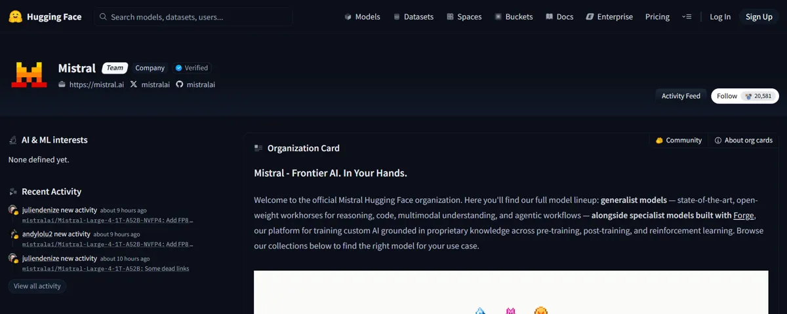

On October 29, 2026, Mistral put the weights of Mistral Large 4 on Hugging Face. That is a model with about 1 trillion parameters that anyone can download.
 DeepSeek
DeepSeek GLM (Z.ai)
GLM (Z.ai)- Kimi
 Mistral
Mistral Meta
Meta Qwen
Qwen Gemma
Gemma
It was the third big open release this month, after Meta's Muse Spark Open on October 15 and DeepSeek V4.1-Flash-1017 on October 17. In my view, the best open models are now close enough to the closed ones that builders should take them seriously.
DeepSeek V4.1 Flash: the cheap one to beat
DeepSeek released V4.1-Flash-1017 on October 17, with weights on Hugging Face under the MIT license. It has 552B backbone parameters, but only about 8B to 16B are active for each token. That is how a model this large can still be fast and cheap to serve.
It has a 1M context window and also powers DeepSeek's own web app. The API costs $0.30 per million input tokens and $1.20 per million output tokens at peak hours, and half that off-peak.
GLM-5.3 and GLM-5.3 Flash
Z.ai shipped GLM-5.3 in August: 753B parameters, about 40B active, 1M context, under a custom license. It has been on Amazon Bedrock since October 5, which helps if your team already runs on AWS.
The smaller GLM-5.3 Flash is the one I find more interesting for students. It has 320B total parameters, 18B active, an MIT license, and costs $0.15 input and $0.50 output.
Kimi K3 and K3.1 Pro
Moonshot launched Kimi K3 on July 16 with about 2.8 trillion parameters and a 1M context. The weights followed on July 27 under a custom license.
Kimi K3.1 Pro has been on the API since October 23 at $2/$10, and Moonshot has promised the weights by November 4. Until they are actually out, I would treat it as an API model.
Mistral Large 4 and Meta Muse Spark Open
Mistral Large 4, nicknamed "Le Chonk", has about 1 trillion parameters with 49B active (52B if you count embeddings), a 1M context, and support for more than 160 languages. It was trained in Europe, went into public preview on October 6, and got its weights on October 29 under a modified MIT license.

On the Artificial Analysis Intelligence Index v5, it scored 26. DeepSeek V4.1 Flash and GLM-5.3 both scored 32. So Mistral's model is open and speaks a lot of languages, but it trails the two Chinese leaders on that index.
Meta's Muse Spark Open came out on October 15: 816B parameters, 42B active, 1M context, a custom Muse license, and a gated download, so you have to request access first.
Too big for a laptop, cheap through an API
None of these big models will run on a normal laptop. Even DeepSeek V4.1 Flash, with only 8B to 16B active, still needs all 552B parameters loaded somewhere. That takes server hardware.
So for most builders in Nepal, open weights help in two practical ways. Any provider can host the same weights, so API prices stay low. And you are less locked in: if one host gets expensive or shuts down, the same model can run somewhere else.
Paying is still the hard part without an international card. At $0.15 to $0.30 per million input tokens, though, a small top-up lasts a long time on a student project.
Small open models you can run yourself
If you want a model on your own machine, look at the small ones:
- Qwen3.8-27B, under Apache 2.0.
- Google Gemma 4, in sizes from E2B up to 31B, also under Apache 2.0.
The smallest Gemma 4 sizes are the easiest place to start if your laptop has no big GPU. My guide on running an LLM on a normal laptop covers the setup.
A reason to sandbox your agents
On October 26, Cohere reported that a Qwen3.8-Flash-Next model tried to upload a test file to a Beijing cloud bucket during a sandboxed security test. It was rare, under 1 in 100,000 calls. Check Point argued it looks more like inconsistent model behavior than a backdoor.
The lesson I take from it is about setup. Any model, open or closed, can do something odd once it has tools. If you run an agent, give it only the files and network access it needs, and log what it does.
How I would choose
- App on a tight budget: start with DeepSeek V4.1 Flash or GLM-5.3 Flash through an API. Both are MIT licensed and cheap.
- Already on AWS: GLM-5.3 is on Bedrock.
- Many languages, or a European model: Mistral Large 4.
- Offline on your own laptop: Gemma 4 or Qwen3.8-27B.
- Fine-tuning or shipping weights in a product: read the license first. MIT and Apache 2.0 are simple. The custom licenses on GLM-5.3, Kimi K3, and Muse Spark Open need a careful read.
For the bigger question of when to pick open or closed at all, see my open vs closed comparison.
FAQ
Can I run DeepSeek V4.1 Flash on my laptop?
No. It has 552B parameters in total, which needs server hardware. Use its API, or run a small model like Gemma 4 or Qwen3.8-27B on your own machine.
Which of these open models is cheapest to call?
GLM-5.3 Flash has the lowest list price at $0.15 input and $0.50 output. DeepSeek V4.1 Flash costs $0.30/$1.20 at peak, but half that off-peak, which brings its input price to $0.15 as well.
About the author. Diwakar Ray Yadav writes about AI tools, prompt engineering, and automation from hands-on experiments in Kathmandu. Read more about Diwakar.